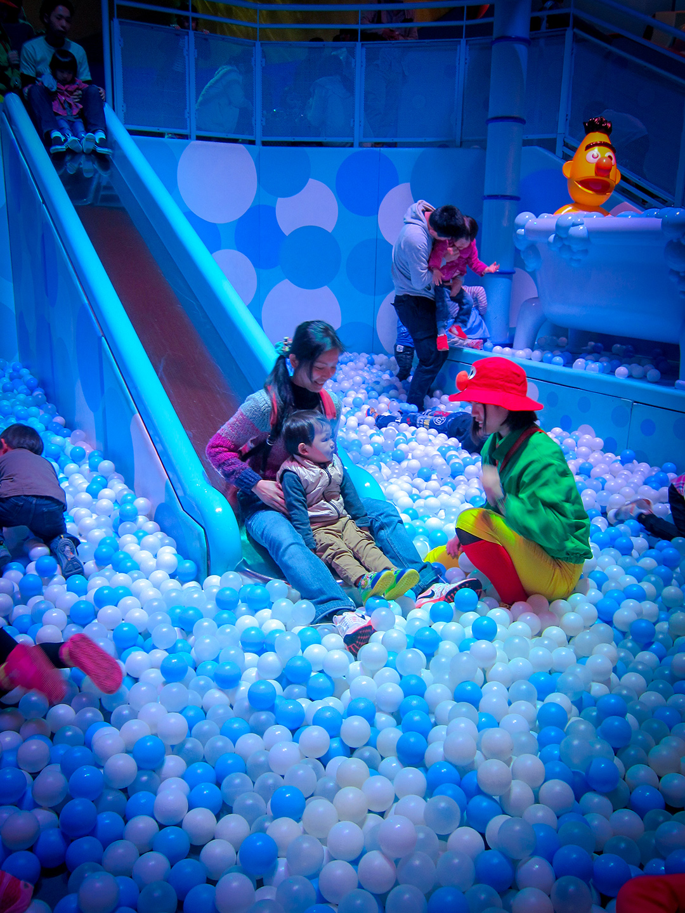

-
自助首發
這趟旅程，對我們來說意義非凡~因為它是我們的第一次國外自助旅行。
從機票、住宿、交通到行程安排，全都自己一手規劃，雖然一開始戰戰兢兢、如履薄冰，但每當完成一個小目標，心中的自信就增加十分。這種成就感，直到現在都覺得難忘。
在大阪，我們走過繁華的 心齋橋道頓堀，在黑門市場大快朵頤，還為了一碗久仰大名的一蘭拉麵乖乖排隊。梅田空中庭園的夜景與復古街景，則讓人看見另一個時空的交錯感。
京都 的行程也充滿驚喜。無論是清水寺舞台的壯麗視野，先斗町小巷的靜謐氛圍，還是在街頭小公園裡的滑梯，都讓我們感受到日本日常與文化的細膩。
當然，最讓靖騰開心的，莫過於環球影城。芝麻街的兒童區、蜘蛛人驚奇冒險，還有夢寐以求的哈利波特魔法世界，讓我們一家人徹底沉浸在童話與奇幻的氛圍裡。
到最後一天回到台灣後，內心湧起一種「原來我們真的辦的到！」的感覺。從一開始的忐忑，到旅行中的自在，每一步都像是在為未來的旅程打下基礎。
這不只是一趟旅遊，而是一個重要的起點。# 自旅的起點
# 也是靖騰第一站
-
第一次在日本搭火車、電車，感覺很新鮮 :)
-

大阪城（Osaka Castle Park）
-

FB 撰寫日期:2015.04.16
回來幾天了~雖然一回國如釋重負導致重感冒~但還是要記錄一下大阪自助心得:
1. 旅費很省(個人物慾非常低，看我每天都同一件外套+牛仔褲就知道XD)~，大阪自助五天四夜花費約: 26000.- (兩大一小的機票、住宿、吃喝、景點門票，環球影城，shopping就看人囉)。
2. 再次感謝小妹的一折員工票，等了15年終於敢用了!! (限空位心臟要大顆)
3. 交通需要"非常認真"做功課。 (a到b點 有可能花費2000日幣up、坐對只需幾百塊)
4. 需要體力與耐力，任何行程都得走路。可以變瘦喔 = =+ (尤其要扛小孩和推車)
5. 行程無壓力，累了就休息~還可發現巷弄間美景。(如圖)
6. 完成每一段行程都會印象深刻。
7. 非常耗費精氣神...但成就感很高!!
總結:
帶著小孩雖然累，但看他玩的不亦樂乎也就心滿意足!!
跟團還是有好處，可以把所有精力全部花在吃喝玩樂 !! 哈哈
以這次金額來看，跟一次日本團(大阪)大約可以去2.5次自助...
好~就這麼決定了? -
特地來這裡吃鰻魚飯~
# 大阪・梅田藍天大廈 B1「滝見小路」復古街景
-

# 京都・先斗町小巷
-

# 京都・清水寺（山門上方步道、遠處見本堂屋脊）
-
# 京都・清水寺「舞台」側的展望處
-

# 大阪城
-
# 大阪車站城／Grand Front Osaka「うめきた広場」水景座階
-
矮額~臭臭...
# 大阪・道頓堀「ぐりこ・や（Glico-ya）拍照點」
-
# 大阪・黑門市場（Kuromon Ichiba Market）
-

排隊等著吃一蘭拉麵
# 大阪・道頓堀川「Tonbori River Walk」步道
-
久仰大名，總算來嘗鮮了 :)
# 大阪・一蘭拉麵（個人座位隔間）
-

靖騰玩的很開心喔!
# 日本環球影城 「Sesame Street」兒童區
-

筋骨還行XD
# 日本環球影城 「The Amazing Adventures of Spider-Man」
-

波特應該找我開車的...
# 日本環球影城 「哈利波特魔法世界」禁忌之旅周邊的福特 Anglia
-
總算來到這夢寐已久的活米村
# 日本環球影城 「活米村」拱門入口
-
FB 撰寫日期:2015.04.24
自從來台北打拼，就一直得到許多貴人相助，
是你(妳)們讓我像個扛住責任的男人~由衷感謝^___^
抽中這支清水寺籤詩像是警惕我，保持競爭力、信念與更加的謙卑~
繼續加油!!# 清水寺大吉籤